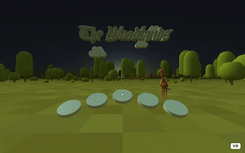
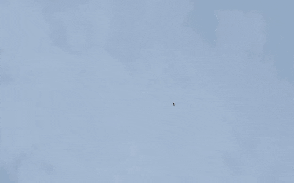

woodland;
A-frame VR
HTML, A-frame, Blender
Virtual reality experiment.
Original audio produced by InspectorJ.
Three-dimensional figures modeled in Blender.
Use WASD keys and mouse drags to navigate.
Use the target cursor with mouse clicks to play the silver drums.

icarus;
weather dashboard
HTML, CSS, JavaScript, GSAP, Three.js
Inspired by the classic Greek myth centered around the son of Daedalus, the atmosphere of the Icarus app depicts a digital rendition of Icarus's view over Earth preceding his fate.
Original audio produced by klankbeeld, licensed under CC BY 3.0.
The app requires geolocation sharing and displays geographical coordinates, region, temperature, weather forecast and local time data.